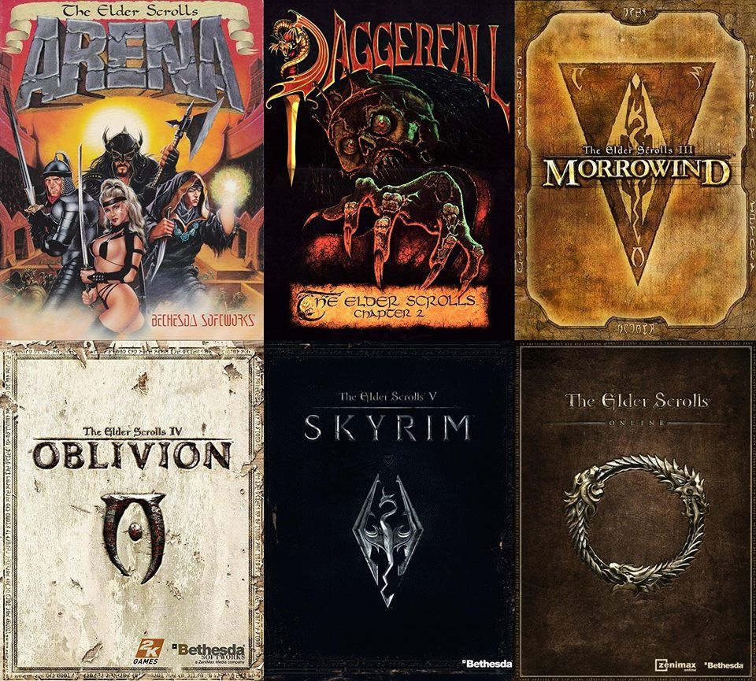

Mi videojuego favorito

Mi videojuego favorito en realidad es una saga, la saga de The Elder Scrolls.
El juego siempre inicia igual, un prisionero que tiene un destino que cumplir para salvar al mundo de Nirn de la destrucción o esclavización. Luego del prólogo se nos dará la posibilidad de crear a un jugador, y es ahí cuando ya somos libres de tomar nuestras decisiones en los mundos que nos presentan los juegos. A lo largo de la saga luchamos contra hechiceros, hasta dragones que desean devorar todo el mundo. Yo elegí estos juegos porque me gusta mucho los elementos de rol que presentan, y la flexibilidad que nos ofrecen a la hora de crear nuestro personaje, y por la gran cantidad de horas de juego que podemos obtener de ellos.
El juego lo recomiendo bastante, y si lo quieres probar, te dejo una guía de inicio rápido de las 3 mejores razas para jugar.
Altmer: los altmer son los mejores magos de todo el juego, ya que tienen más magicka y las mejores estadísticas para jugar magos.
Nórdicos: Los nórdicos son de las mejores razas para crear un guerrero, ya que son buenos con armadura liviana y con armas de una mano o de dos manos, pero son malos magos.
Imperiales: los imperiales son la clase más balanceada, ya que tienen estadísticas que cubren todas las áreas, y son de las mejores clases con el atributo de elocuencia.